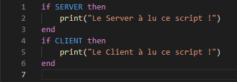
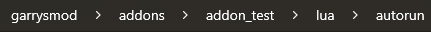

Dans Garry's Mod quand on aprrend le gLua, il est important de connaitre la différence entre le côté Client, Server (Serveur), et Shared (Partagé). Ces trois termes constituent la base même du code
Dans le Wiki, pour bien voir quelle fonction s'execute dans quelle côté, un carré jaune s'affiche pour le côté Client, bleu pour le côté Serveur, et vert pouyr le côté Partagé. Notez qu'une fonction (ou autre) peut être executable dans plusieurs côtés en même temps.
Le côté Client constitut l'ensemble du code qui va être téléharger et executer par les joueurs.
Ca peut être des interfaces, des commandes, ou plain d'autre action qui doivent avoir des actions sur le joueur ou qui doivent avoir un impact dessus
Le côté Serveur constitut tous les scripts qui doivent être executés par le serveur, ils sont très impotants car ils permettent de réaliser un grand nombre d'action
Il s'agt d'un côté asset particulier puisqu'il est lut est téléchargé par le client et le serveur, on y met du code qui est nessecaire pour les deux côtés précédents.
Par exemple, un fichier de configuration d'un mod se fera dans le partagé car les variables ou fonctions qui le constiturons devrons être accessibles pour le serveur et le client
Une fois dans le fichier "addons" de votre jeu, la première étape est de créer un fichier "lua" et dedans "autorun", cela fera en sorte que le jeu ira automatquement dans le fichier autorun pour y lire tous les scripts contenuent dedans.
Une fois dans "addons/nom de ton mod/lua/autorun", nous pouvons créer notre premier script. Appelons le "test_loader.lua".
Un Loader est un script présent dans le plupart des addons Garry's Mod, il permet de lancer le mod proprement, ou bien de dire au serveur ou au client de lire des fichiers spécifiques qui ne seraient pas lus par défaut.
Voici un exemple de code simple :
Le nommage d'un addon peut sembler peut important mais il est essentiel de ne pas négliger cette étape.
Effectivement, si on veut que notre addon soit chargé proprement par le Serveur et le Client. Le nom du fichier d'un addon doit être toujours en minuscules, sans caractères spéciaux et sans espaces.
Pour remplacer les espaces, on peut mettre des tirets du huit "_".
Exemple : "Addon Teste" n'est pas un nommage correcte, préférez "addon_test".
Voici le résultat avec le chemin d'accès :
Pour pus d'inforations, consultez le Wiki de Garry's Mod, vous y trouverez toutes les inofrmations sur le gLua (fonctions, variable, messages nets, interfaces, etc ...).